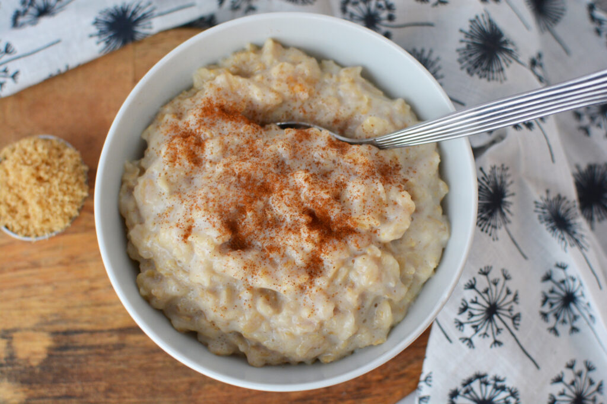

Brown Sugar Oatmeal
Description:
Brown sugar oatmeal is a simple recipe that involves only 3 ingredients. Brown sugar, steel cut oatmeal, and water

Ingredients:
- Water (160 ML)
- Oatmeal (40 G)
- Brown Sugar (8 G)
Directions:
- Mix water and oatmeal together in a medium to large sized bowl
- Microwave for 2 minutes on HIGH setting
- Add sugar in bowl and mix
- Wait 2 minutes before eating
Back to Home